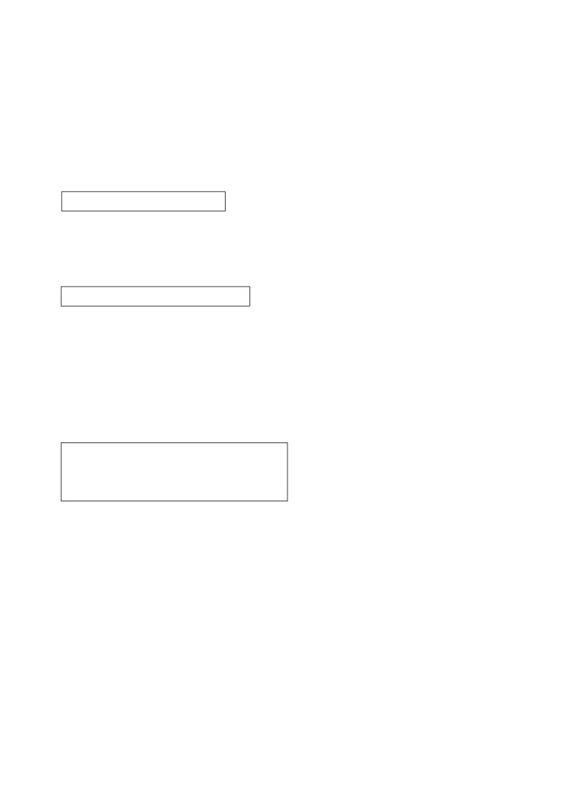

第２６課
課:26 (頁:1/10)
ことば
1. みます Ⅱ
見ます、診ます
看，診斷
2. さがします Ⅰ
探します、捜します 尋找
3.
おくれます
Ⅱ
遅れます
遲了，沒趕上〔
電車〕
［でんしゃに～］
［電車に～］
4.
まに あいます
Ⅰ
間に 合います
趕上〔
電車〕
［でんしゃに～］
［電車に～］
5. やります Ⅰ
做，從事
6.
さんかします
Ⅲ
参加します
參加〔
晚會〕
［パーティーに～］
7. もうしこみます Ⅰ
申し込みます
報名，申請
8. つごうが いい
都合が いい
方便（時間上）
9. つごうが わるい
都合が 悪い
不方便（時間上）
10. きぶんが いい
気分が いい
感覺舒服
11. きぶんが わるい
気分が 悪い
不舒服
12. しんぶんしゃ
新聞社
報社
13. じゅうどう
柔道
柔道
14. うんどうかい
運動会
運動會
15. ばしょ
場所
場所，地點
16. ボランティア
義務勞動，義工
17. ～べん
～弁
～方言
18. こんど
今度
這次，這回，下次，下回
19. ずいぶん
很，極，相當
20. ちょくせつ
直接
直接
21. いつでも
隨時
22. どこでも
在任何地方
23. だれでも
任何人都
24. なんでも
何でも
什麼都
25. こんな～
這樣的
26. そんな～
那樣的（離聽話者較近）
27. あんな～
那樣的（離說話人和聽話人都較遠）
28. ※ＮＨＫ
日本放送協會
ひ
課:26 (頁:2/10)
29.
※こどもの 日
兒童節
30. ※エドヤストア
愛多雅商店（虛構的商店名）
かい わ
会話
かた
に もつ
片づきます ［荷物が～］Ⅰ
收拾〔行李〕
ごみ
垃圾
だ
出します［ごみを～］Ⅰ
扔掉，倒〔垃圾〕
も
燃えます［ごみが～］Ⅱ
〔垃圾〕燃燒
げつ すい
きん
月・水・金
星期一、三、五
お
ば
置き場
放置處
よこ
横
旁邊
びん
瓶
瓶子
かん
缶
罐子
ゆ
［お］湯
熱水
ガス
瓦斯
がい しゃ
～会社
～公司
れん らく
連絡します Ⅲ
聯絡
こま
困ったなあ。
怎麼辦呢﹖
よ
もの
…読み物…………………………………………………………………………
でん し
電子メール
電子郵件
う ちゅう
宇宙
宇宙
こわ
怖い
害怕﹐可怕
う ちゅう せん
宇宙船
太空飛船
べつ
別の
別的
う ちゅう ひ こう し
宇宙飛行士
太空人
ど い
たか お
※土井 隆雄
土井隆雄（日本太空人﹐1995～
）
……………………………………………………………………………………
ぶん けい
文型
りょ こう
1. あしたから 旅行なんです。
い
はな
なら
せん せい
しょう かい
2. 生け花を 習いたいんですが、いい 先生を 紹介して
いただけませんか。
れい ぶん
例文
わた なべ
とき どき
おお さか べん
つか
1. 渡辺さんは 時々 大阪弁を 使いますね。
おお さか
す
大阪に 住んで いたんですか。
さい
おお さか
す
…ええ、15歳まで 大阪に 住んで いました。
くつ
か
2.
おもしろい デザインの 靴ですね。 どこで 買ったんですか。
か
くつ
課:26 (頁:3/10)
…エドヤストアで 買いました。 スペインの 靴です。
おく
3.
どうして 遅れたんですか。
こ
…バスが 来なかったんです。
うん どう かい
さん か
4.
運動会に 参加しますか。
さん か
す
…いいえ、参加しません。 スポーツは あまり 好きじゃ
ないんです。
に ほん ご
て がみ
か
み
5.
日本語で 手紙を 書いたんですが、ちょっと 見て
いただけませんか。
…いいですよ。
けん がく
6.
ＮＨＫを 見学したいんですが、どう したら いいですか。
ちょくせつ
い
み
…直接 行ったら いいですよ。 いつでも 見る ことが
できます。
かい わ
会話
だ
どこに ごみを 出したら いいですか
かん り にん
ひ
こ
に もつ
かた
管理人：
ミラーさん、引っ越しの 荷物は 片づきましたか。
かた
ミラー：
はい、だいたい 片づきました。
す
だ
あのう、ごみを 捨てたいんですが、どこに 出したら
いいですか。
かん り にん
も
げつ
すい
きん
あさ
だ
管理人：
燃える ごみは 月・水・金の 朝 出して ください。
お
ば
ちゅう しゃ じょう
よこ
ごみ置き場は 駐車場の 横です。
びん
かん
ミラー：
瓶や 缶は いつですか。
かん り にん
も
ど よう び
管理人：
燃えない ごみは 土曜日です。
ゆ
で
ミラー：
はい、わかりました。 それから、お湯が 出ないんですが……。
かん り にん
がい しゃ
れん らく
き
管理人：
ガス会社に 連絡したら、すぐ 来て くれますよ。
こま
でん わ
ミラー：
……困ったなあ。 電話が ないんです。
れん らく
すみませんが、連絡して いただけませんか。
かん り にん
管理人：
ええ、いいですよ。
ねが
ミラー：
すみません。 お願いします。
れん しゅう
課:26 (頁:4/10)
練習 Ａ
1.
いく
んです
＊きれいな
んです
いかない
きれいじゃ ない
いった
きれいだった
いかなかった
きれいじゃ なかった
さむい
んです
＊びょうきな
んです
さむくない
びょうきじゃ ない
さむかった
びょうきだった
さむくなかった
びょうきじゃ なかった
2.
チケットが
いる
んですか。
あたら
新しい パソコンを
かった
だれに チョコレートを
あげる
に ほん
いつ 日本へ
きた
かい しゃ
3.
どうして
会社を
やすんだ
んですか。
じ しょ
この 辞書を
つかわない
エアコンを
つけない
あたま
……
頭が
いたかった
んです。
あまり
べんりじゃない
こしょうな
うん どう かい
さん か
ふく おか
4.
わたしは 運動会に 参加しません。
福岡へ
しゅっちょうする
んです。
よう じ
用事が
ある
つ ごう
都合が
わるい
し りょう
5.
資料が
ほしい
んですが、
おくって
いただけませんか。
か
かた
書き方が
わからない
おしえて
てら
お寺を
けんがくしたい
あんないして
だい がく
6.
さくら大学へ
いきたい
んですが、
どこで
おりた
ら いいですか。
くるま
車の かぎを
なくした
どう
した
とも だち
なに
友達が
けっこんする
何を
あげた
れん しゅう
練習 Ｂ
れい
あめ
ふ
あめ
ふ
1.
例： 雨が 降って います →
雨が 降って いるんですか。
やま
い
の
1)
山へ 行きます →
2) エレベーターに 乗りません →
つく
き ぶん
わる
3)
シュミットさんが 作りました →
4) 気分が 悪いです →
れい
か
課:26 (頁:5/10)
例： いい かばんです・どこで 買いましたか
2.
か
→ いい かばんですね。 どこで 買ったんですか。
え
1)
おもしろい 絵です・だれが かきましたか →
なに
2)
ずいぶん にぎやかです・何を やって いますか →
に ほん ご
じょう ず
べん きょう
3)
日本語が 上手です・どのくらい 勉強しましたか →
おそ
4)
遅かったです・どう しましたか →
れい
に ほん ご
なら
だい がく
3.
例： どこで 日本語を 習いましたか。（ 大学 ）
に ほん ご
なら
→ どこで 日本語を 習ったんですか。
だい がく
なら
……大学で 習いました。
しゃ しん
と
きん かく じ
1)
この 写真は どこで 撮りましたか。（ 金閣寺 ） →
ひ
こ
らい げつ
みっ か
2)
いつ 引っ越ししますか。（ 来月の 3日 ） →
はなし
き
た なか
3)
だれに その 話を 聞きましたか。（ 田中 ） →
なに
さが
4)
何を 捜して いますか。（ ホッチキス ） →
れい
かい しゃ
ちち
し ごと
てつだ
4.
例： 会社を やめます（ 父の 仕事を 手伝います ）
かい しゃ
→ どうして 会社を やめるんですか。
ちち
し ごと
てつだ
……父の 仕事を 手伝うんです。
ひ
こ
いま
せま
1)
引つ越しします（ 今の うちは 狭いです ） →
しゃ いん りょ こう
い
りょ こう
す
2)
社員旅行に 行きません （ グループ旅行は 好きじゃ ありません ） →
かい ぎ
ま
あ
しん かん せん
おく
3)
会議に 間に 合いませんでした （ 新幹線が 遅れました ） →
がつ いつ か
やす
ひ
4)
5月5日は 休みです （ こどもの 日です ） →
れい
まい あさ しん ぶん
よ
じ かん
5.
例1： 毎朝 新聞を 読みますか。（ いいえ・時間が ありません ）
よ
じ かん
→ いいえ、読みません。 時間が ないんです。
れい
くるま
き
例2： ビールは いかがですか。（ すみません・きょうは 車で 来ました ）
くるま
き
→ すみません。 きょうは 車で 来たんです。
と しょ かん
い
1)
よく 図書館へ 行きますか。
とお
（ いいえ、あまり・遠いです ） →
すず き
あ
2)
きのうの パーティーで 鈴木さんに 会いましたか。
すず き
き
（ いいえ・鈴木さんは パーティーに 来ませんでした ） →
す
3)
たばこを 吸っても いいですか。
きん えん
（ すみません・ここは 禁煙です ） →
の
い
4)
これから 飲みに 行きませんか。
やく そく
（ すみません・きょうは ちょっと 約束が あります ） →
れい
い
ばな
なら
せん せい
しょう かい
6. 例： 生け花を 習いたいです・先生を 紹介します
い
ばな
なら
せん せい
しょう かい
→ 生け花を 習いたいんですが、先生を 紹介して
いただけませんか。
し やく しょ
い
ち ず
1)
市役所へ 行きたいです・地図を かきます →
こん ど
にち よう び
てつだ
き
課:26 (頁:6/10)
2)
今度の 日曜日に うちで パーティーを します・手伝いに 来ます
→
じ こくひょう
み かた
おし
3)
時刻表の 見方が わかりません・教えます →
に ほん ご
て がみ
か
み
4)
日本語で 手紙を 書きました・ちょっと 見ます →
れい
きん かく じ
い
の
7.
例： 金閣寺へ 行きたいです・どの バスに 乗りますか
きん かく じ
い
の
→ 金閣寺へ 行きたいんですが、どの バスに 乗ったら いいですか。
か ぶ き
み
か
1)
歌舞伎を 見たいです・どこで チケットを 買いますか →
でん わ ばん ごう
しら
2)
電話番号が わかりません・どうやって 調べますか →
くう こう
とも だち
むか
い
なん
い
3)
空港へ 友達を 迎えに 行きます・何で 行きますか →
こ しょう
4)
ファクスが 故障です・どう しますか →
れん しゅう
練習 Ｃ
1. Ａ: パーティーは どうでしたか。
たの
Ｂ: とても 楽しかったです。
さん か
どうして 参加しなかったんですか。
いそが
Ａ:
忙しかったんです。
うん どう かい
1) 運動会
からだ
ちょう し
わる
体の
調子が 悪かったです
しゃ いん りょ こう
2)
社員旅行
よう じ
ちょっと 用事が ありました
ぼう し
か
2. Ａ: すてきな 帽子ですね。 どこで 買ったんですか。
か
Ｂ: これですか。 エドヤストアで 買いました。
ぼう し
さが
Ａ: わたしも そんな 帽子を 探して いるんです。
みせ
ば しょ
おし
すみませんが、店の 場所を 教えて いただけませんか。
Ｂ: ええ、いいですよ。
1) セーター
みせ
ち ず
店の 地図を かきます
くつ
2)
靴
いち ど
つ
い
一度 連れて 行きます
しん ぶん しゃ
けん がく
3. Ａ: 新聞社を 見学したいんですが、どう したら いいですか。
ちょくせつ
でん わ
もう
こ
おも
Ｂ: 直接 電話で 申し込んだら いいと 思いますよ。
Ａ: そうですか。 どうも。
さん か
1) ボランティアに 参加します
し やく しょ
とう ろく
市役所に 登録します
じゅう どう
なら
2) 柔道を 習います
やま した
き
山下さんに 聞きます
もん だい
問題
れい
す
課:26 (頁:7/10)
1.
1)
…例： はい、好きです。
れい
ひ と り
べん きょう
2)
…例： 一人で勉強しました。
れい
に ほん
だい がく
はい
3)
…例： 日本の大学に入りたいんです。
れい
ばん り
ちょうじょう
おも
4)
…例： 万里の長城がいいと思います。
れい
か し
おも
5)
…例： お菓子がいいと思います。
2.
1)
( ○ )
2)
( × )
3)
( × )
4)
( ○ )
5)
( × )
れい
た
き ぶん
わる
3. 例： あまり 食べませんね。気分が （ 悪いんです ） か。
わる
す
う
悪いです 好きです ありません ありました 生まれました
おそ
なに
1)
遅かったですね。 何か （ あったんです ） か。
くるま
か
もの
い
ちか
2)
いつも 車で 買い物に 行きますね。近くに スーパーは
（ ないんです ） か。
とき どき
おお さか べん
つか
おお さか
う
3)
時々 大阪弁を 使いますね。 大阪で （ 生まれたんです ） か。
ぼう し
ぼう し
す
4)
いつも 帽子を かぶって いますね。帽子が （ 好きなんです ） か。
れい
に ほん ご
じょう ず
べん きょう
4.
例： 日本語が 上手ですね。（ どのくらい 勉強したんですか ）。
ねん
べん きょう
…4年 勉強しました。
か
1)
いい ネクタイですね。（ どこで買ったんですか ）。
か
…エドヤストアで 買いました。
たんじょう び
2)
テレサちゃん、誕生日 おめでとう ございます。
なん さい
（ 何歳になったんですか ）。
さい
…10歳に なりました。
くに
かえ
さび
3)
カリナさんが 国へ 帰ると、寂しく なりますね。
かえ
（ いつ帰るんですか ）。
らい げつ
よっ か
…来月の 4日です。
か
4)
たくさん ビールを 買いましたね。
なん にん
く
きょうの パーティーは （ 何人ぐらい来るんですか ）。
にん
き
…50人ぐらい 来ます。
れい
おく
5. 例1： どうして 遅れたんですか。
こ
…（ バスが なかなか 来なかったんです ）。
れい
りょ こう
さん か
例2： スキー旅行に 参加しますか。
つ ごう
わる
…いいえ。 （ ちょっと 都合が 悪いんです ）。
の
1)
どうして ビールを 飲まないんですか。
きら
…（ 嫌いなんです ）。
め
あか
2)
目が 赤いですね。どう したんですか。
め
はい
…( 目にごみが入ったんです )。
まい あさ
しん ぶん
よ
課:26 (頁:8/10)
3)
毎朝 新聞を 読みますか。
じ かん
…いいえ。 （ 時間がないんです ）。
い
4)
よく カラオケに 行きますか。
す
へ た
…いいえ。 （ あまり好きじゃないんです （ 下手なんです ） ）。
れい
ちょう し
わる
み
6. 例1： パソコンの 調子が 悪いんですが、（ 見て いただけませんか ）。
れい
か
か
例2： パソコンを 買いたいんですが、どこで （ 買ったら いいですか ）。
み
てつだ
おし
もう
こ
か
見ます 手伝います 教えます 申し込みます 買います します
らい しゅう
にち よう び
ひ
こ
てつだ
1)
来週の 日曜日 引っ越しするんですが、（ 手伝っていただけませんか ）。
は
いた
は い しゃ
おし
2)
歯が 痛いんですが、いい 歯医者を （ 教えていただけませんか ）。
しん ぶん しゃ
けん がく
もう
こ
3)
新聞社を 見学したいんですが、どこに （ 申し込んだらいいですか ）。
4)
パスポートを なくしたんですが、どう （ したらいいですか ）。
でん し
7.
電子メールで
ど い たか お さま
土井隆雄様
かえ
う ちゅう
ふね
そと
お帰りなさい。 宇宙は どうでしたか。 船の 外は
こわ
う ちゅう せん
なか
せま
き かい
怖くなかったですか。 宇宙船の 中は 狭くて、いろいろな 機械が
しょく じ
べつ
へ や
あ
ありますが、食事は 別の 部屋で するんですか。 シャワーを 浴びる
う ちゅう
くら
あさ
よる
ことは できるんですか。 宇宙は いつも 暗いですが、朝と 夜は
じ かん
に ほん
どうやって わかるんですか。 時間は 日本や
じ かん
う ちゅう じ かん
アメリカの 時間じゃなくて、宇宙時間を
つか
使うんですか。
ぼく
う ちゅう ひ こう し
僕も 宇宙飛行士に なりたいんですが、どんな
べんきょう
おし
勉強を したら いいですか。 教えて ください。
れい
ど い
う ちゅう ひ こう し
例：（ ○ ）土井さんは 宇宙飛行士です。
ど い
う ちゅう
い
う ちゅう せん
そと
で
1)
（ 〇 ）土井さんは 宇宙へ 行って、宇宙船の 外へ 出ました。
でん し
おく
ひと
う ちゅう
けん きゅう
2)
（ × ）電子メールを 送った 人は 宇宙に ついて 研究して
います。
文法
１
動詞
普通形
}
い形容詞
んです
な形容詞 普通形
}
}
名詞
～／→～な
課:26 (頁:9/10)
「～んです」是強調說明原因、理由、根據等的表達方式。口語中用「～んで
す」，而文章語中則用「
～のです」。「
～んです」的用法如下。
1）
～んですか
這種表達方式用於以下情況。
(1)說話人對於看到、聽到的事，推測理由和原因並進行確認時。
わた なべ
とき どき おお さか べん
つか
①渡辺さんは 時々 大阪弁を 使いますね。
おお さか
す
大阪に 住んで いたんですか 。
さい
おお さか
す
…ええ、１５ 歳まで 大阪に 住んで いました。
渡邊小姐有時說大阪方言呢。
在大阪住過嗎？
15
…對，我
歲以前住在大阪。
(2)說話人對看到、聽到的事實尋求更詳細的說明時。
くつ
か
②おもしろい デザインの 靴ですね。どこで 買ったんですか。
か
…エドヤストアで 買いました。
真是樣式別緻的鞋呀，在哪裡買的呢？
…在愛多雅商店買的。
(3)說話人對看到、聽到的事，向聽話人詢問理由和原因時。
おく
③どうして 遅れたんですか。
為什麼遲到了？
(4)尋求對事態的說明時。
④どう したんですか。
怎麼了？
〔註〕「～んですか」句中，有時包含了說話人驚訝或懷疑（疑念）的情緒，以
及強烈的好奇心。如果用得不恰當，會使聽話人不高興，所以要注意使用方法。
2）
～んです
這個表達方式用於以下情況。
(1)回答上述1）的(3)、(4)的疑問句，並說明理由和原因時。
おく
⑤どうして 遅れたんですか。
為什麼遲到了？
こ
…バスが 来なかったんです 。
…公共汽車沒來。
⑥どう したんですか。
怎麼了？
き ぶん
わる
…ちょっと 気分が 悪いんです。
…有點不舒服。
(2)說話人對自己說的話附加理由和原因時。
まい あさ しん ぶん
よ
⑦毎朝 新聞を 読みますか。
你每天早上看報紙嗎？
じ かん
…いいえ。 時間が ないんです。
…不，沒有時間。
〔註〕如下例般只是說明事實時不用「～んです」。
わたしは マイク・ミラーです。
我是麥克米勒。
×
わたしは マイク・ミラーなんです。
3）
～んですが﹑～

26 (頁:10/10)
「～んですが」有著提起話題的作用。後面一般接表示委託、勸誘或請求許可課:
詞，這時的「が
」起著連接上下文的作用，表示猶疑和客氣，如⑩
所示，「～ん
ですが」後面接續的詞，如果是說話人和聽話人都明白時多省略掉。
に ほん ご
て がみ
か
み
⑧日本語で 手紙を 書いたんですが、ちょっと 見て いただけませんか。
我用日語寫了封信，您能幫我看看嗎？
けん がく
⑨ＮＨＫを 見学したいんですが、どう したら いいですか。
我想參觀 ＮＨＫ，應該怎麼辦呢？
ゆ
で
⑩お湯が 出ないんですが……。
還沒有熱水……。
２ . 動詞 て形 いただけませんか
能幫我…嗎
?
這是比「～て ください
」更禮貌的請求表達方式。
せん せい
しょう かい
⑪いい 先生を 紹介して いただけませんか。
您能幫我介紹一位好老師嗎？
３.
疑問詞 動詞 た形 ら いいですか
…做才好呢？
か
⑫どこで カメラを 買ったら いいですか。 在哪裡買照相機好呢？
こま
かね
⑬細かい お 金が ないんですが、どう したら いいですか。
我沒有零錢，該怎麼辦呢？
「～たら いいですか
」是說話人對自己應做或最好去做的事，徵求聽話人的建
議或指示的表達方式。換句話說，⑫
中說話人想買相機，但不知道在哪裡買，所
以這個句子是希望聽話人推薦一個能買照相機的好商店。
す
きら
４.
好きです／嫌いです
喜歡 /討厭
じょう ず
へ た
名詞（目的） は{上手です／下手です
名詞 {好 /差勁
あります、等
有，等
うん どう かい
さん か
⑭運動会に 参加しますか。
す
…いいえ。 スポーツは あまり 好きじゃ ないんです。
你會參加運動會嗎？
…不，我不太喜歡運動。
將主語或以「を
」表示的受詞，以助詞「は
」提示為主題的用法，我們在初級Ⅰ、
初級Ⅱ中已經學過（第10
課、第17
課）。「が
」所表示的受詞，也可以用助詞「は
」
將其提示為主題。